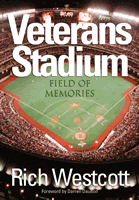

<body bgcolor="#FFFFFF" text="#000000" link="#0000FF" vlink="#CC0000" alink="#CC0000"><center><hr width="350" size="1" align="center" noshade>A loving tribute to the home of some of Philadelphia's greatest sporting and cultural events<hr width="350" size="1" align="center" noshade><p><a href="https://cdcshoppingcart.uchicago.edu/Cart/ChicagoBook.aspx?ISBN=9781592134281&&PRESS=temple" target="_top">Buy this book!</a> | <a href="https://cdcshoppingcart.uchicago.edu/Cart/Cart.aspx?PRESS=temple" target="_top">View Cart</a> | <a href="https://cdcshoppingcart.uchicago.edu/Cart/Cart.aspx?PRESS=temple" target="_top">Check Out</a></p><p></p></center><!--none//--><h1>Veterans Stadium</h1>
<H2>Field of Memories</H2>
<h3>Rich Westcott, foreword by Darren Daulton</h3>
<P>cloth 1-59213-428-9 $35.50, Sep 05, <FONT COLOR=#990033>Available</FONT>
<BR> 232 pp
7x10
</P><BLOCKQUOTE><I>"As Rich Westcott notes, Veterans Stadium's demise was met with cheers in some quarters, and by nostalgic tears in others. Westcott covers virtually every aspect of the stadium's 33 years&#151from its conception, and construction, interviews with more than 125 people for whom the Vet was a prominent part of their professional and personal lives, and the two primary tenants of the stadium, Phillies baseball and Eagles football. </i>Veterans Stadium<i> is a special piece of historic nostalgia and it will be of significant interest to the sports-book reading public."</i>
<br>&#151<b>Bob Bloss</b>, author of <i><a href="1716_reg.html" target="_top">Rookies of the Year</a></i><i></I></BLOCKQUOTE>
<p>Veterans Stadium was the outdoor sports and concert capital of Philadelphia from 1971 until its televised demolition in 2004. At its best, "The Vet" spawned two of the greatest moments in the city's sports history&#151Tug McGraw's 1980 strikeout of Willie Wilson to win the World Series and the Eagles thrashing of the Dallas Cowboys to clinch their first Super Bowl bid. At its worst, it saw fans pelt Santa Claus with snowballs and the opening of an in-stadium branch of Philadelphia municipal court to deal with rowdy Eagles fans.
<p>Part of a look-alike generation of all-purpose stadiums erected around the country, the Vet took on its own personality over the years. For all its deficiencies, it left fans loving it in the way they loved their own families&#151warts and all. Almost 100 photographs and Rich Westcott's yarns make <i>Veterans Stadium</i> the one book that will help Philadelphians&#151and Philadelphia visitors&#151remember thirty years of their history.
<BR>&nbsp;<h2>Excerpt</h2><P>Excerpt available at <a href="http://www.temple.edu/tempress">www.temple.edu/tempress</a></p>
<BR>&nbsp;<h2>Reviews</h2>
<p><i>"Terrific... well researched... crammed with memories, some gaudy, some goofy, some grim."</i>
<br>&#151<b><i>The Philadelphia Daily News</i></b>
<p><i>"[T]his book belongs on the great books list.... even if it doesn't make the great books list, it belong on the must read list for every Philadelphia sports fan."</i>
<br>&#151<b><i>Philadelphia Public Record</i></b>
<p><i>"Rich Westcott has found the time to write another outstanding book, his seventeenth in a very prolific writing career... His book </i>Veterans Stadium<i> is a loving tribute to the home of some of Philadelphia's greatest sporting and cultural events, and the one book that will help Philadelphians remember its thirty year history."</i>
<br>&#151<b><i>Town Talk</i></b>
<BR>&nbsp;<h2>Contents</h2><P>
<p>Foreword &#150; Darren Daulton
<br>Acknowledgments
<br>Photo Credits
<br>Introduction
<p>1. The Long Trip to Completion
<br><i>It took nearly 20 years to get a new stadium</i>
<p>2. It's Finally Opening Day
<br><i>State-of-the-art facility draws rave reviews</i>
<p>3. Fair or Foul?
<br><i>The Vet had both its supporters and its detractors</i>
<p>4. Phillies' Finest
<br><i>The team's best 25 players at the Vet</i>
<p>5. The Greatest Moment
<br><i>Nothing tops the last game of the 1980 World Series</i>
<p>6. Special Occasions
<br><i>Over the years, there were many memorable games</i>
<p>7. Rarely a Dull Moment
<br><i>Games were often accompanied by grand promotions</i>
<p>8. Ballpark Personalities
<br><i>There were a number of familiar figures at Phillies games</i>
<p>9. Hitter Friendly
<br><i>A good park for the long ball</i>
<p>10. Flying High, Flying Low
<br><i>The Eagles had their ups and downs at the Vet</i>
<p>11. Last Stop Before the Super Bowl
<br><i>Eagles beat Dallas in a memorable Vet game</i>
<p>12. Flaws in the Field
<br><i>Artificial turf was a controversial subject</i>
<p>13. Behind the Scenes
<br><i>The lowest level was one of the most important areas</i>
<p>14. Rooting for the Home Teams
<br><i>There's no fan like a Philly sports fan</i>
<p>15. Best Seat in the House
<br><i>The press box had both assets and liabilities</i>
<p>16. Multiple Uses
<br><i>The Vet had Army-Navy games and many other events</i>
<p>17. The Final Year
<br><i>A memorable era comes to an end</i>
<p>18. One Last Look
<br><i>Firsts, lasts, and a few other facts and figures</i>
<p>Name Index
</P><BR>&nbsp;<H2>About the Author(s)</H2>
<table><tr><td valign="top"><img src="/tempress/authors/1818_au1.gif" height="90" width="75"></td><td width="100%" valign="middle"><p><b>Rich Westcott</b> is a writer and sports historian and a veteran of more than 40 years as a working journalist. He is a leading authority on the Phillies, and for 14 years was editor and publisher of Phillies Report. A native Philadelphian, he is the author of 18 other books, including <I><a href="1818_reg.html" target="_top">Veterans Stadium</a></i>, <I><a href="1273_reg.html" target="_top">Philadelphia's Old Ballparks</a></i>, <i><a href="987_reg.html" target="_top">The Phillies Encyclopedia</a></i> (with Frank Bilovsky), and <I><a href="1533_reg.html" target="_top">A Century of Philadelphia Sports</a></i>. Westcott has seen or covered all the major teams in Philadelphia, including the Warriors and 76ers.</P></td></tr></table>
<BR><H2>Subject Categories</H2>
<p><A HREF="/tempress/sports.html" TARGET="_top">Sports</a>
<BR><A HREF="/tempress/philly.html" TARGET="_top">Philadelphia Region</a>
<BR><A HREF="/tempress/general.html" TARGET="_top">General Interest</a>
</p>
<p align="center"><a href="https://cdcshoppingcart.uchicago.edu/Cart/ChicagoBook.aspx?ISBN=9781592134281&&PRESS=temple" target="_top">Buy this book!</a> | <a href="https://cdcshoppingcart.uchicago.edu/Cart/Cart.aspx?PRESS=temple" target="_top">View Cart</a> | <a href="https://cdcshoppingcart.uchicago.edu/Cart/Cart.aspx?PRESS=temple" target="_top">Check Out</a></p><p><font face="Arial" size="1"><a href="copyright.html" onMouseOver="window.status='Web Copyright Policy';return true;" onMouseOut="window.status=''" title="Web Copyright Policy">&copy;</a> 2015 <a href="http://www.temple.edu" target="new" onMouseOver="window.status='Link to Temple University home page';return true;" onMouseOut="window.status=''" title="Link to Temple University home page">Temple University</a>. All Rights Reserved. http://www.temple.edu/tempress/titles/1818_reg.html</font></p>